part 0: setup
here are some interesting text prompts i used to generate prompt embeddings with:
- prompt 1: cute cat in teacup
- prompt 2: flaky buttery croissant with cross section
- prompt 3: snowy winter mountains during sunset
for each of the 3 prompts above, i used 10 and then 50 inference steps. using more inference steps seemed to make the model adhere more to the prompt, and appear more "realistic" when i used less steps. for example with the kitten, its fur looks more real in 10 steps. but at the same time, 50 steps produces a lot more details seen by the background of the kitten (to make it more "cute?"), and the croissant which in general has more detail.
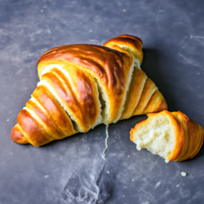
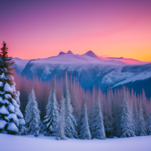
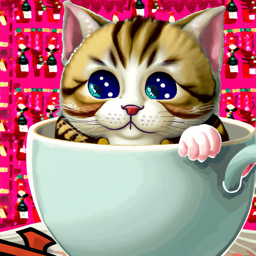
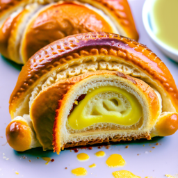
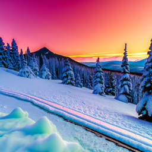
for the rest of the project, i used a seed value of 28.
part 1.1: implementing the forward process
here is my implementation of the forward function:
def forward(im, t):
with torch.no_grad():
alphas_cumprod_t = alphas_cumprod[t]
im_noisy = torch.sqrt(alphas_cumprod_t) * im + torch.sqrt(1 - alphas_cumprod_t) * torch.randn_like(im)
return im_noisy
here is the Campanile at different noise levels:
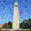
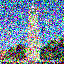
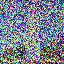
part 1.2: classical denoising
here are the noisy vs Gaussian-denoised versions of the Campanile:
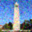
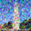
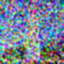
part 1.3: one-step denoising
here are the noisy vs one-step-denoised versions of the Campanile:
part 1.4: iterative denoising
here are some of my results from iterative denoising:
here is the Campanile every 5th loop of denoising, which corresponded to the following timesteps:
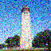
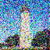
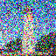
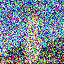
let's compare some of the clean images here:

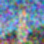
part 1.5: diffusion model sampling
here are 5 sampled images using the diffusion model:
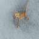
part 1.6: classifier-free guidance
in this part, i implemented the iterative_denoise_cfg function. using this function with a scale of 7,
here are 5 samples of photos generated on the prompt "a high quality photo": to me, they looked more "high quality" than
1.5 with vivid and contrastable objects and colors.
part 1.7: image-to-image translation
here are edits of the Campanile at different noise levels with the conditional "a high quality photo" text prompt
in addition, here's the same process repeated on two of my own chosen images:
chosen image #1: snowy mountains in a sunset

chosen image #2: a cross section of a croissant
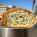
part 1.7.1: editing hand-drawn and web images
web image:
i chose this image of Gru from the web, and here are the resultant edits at different noise levels:
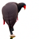
hand-drawn images:
here are two of my hand-drawn images, with resultant edits at different noise levels:
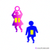
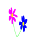
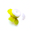
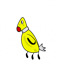
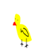
part 1.7.2: inpainting
here is an inpainted campanile with the provided mask


in addition, here's the same process repeated on two of my own chosen images:
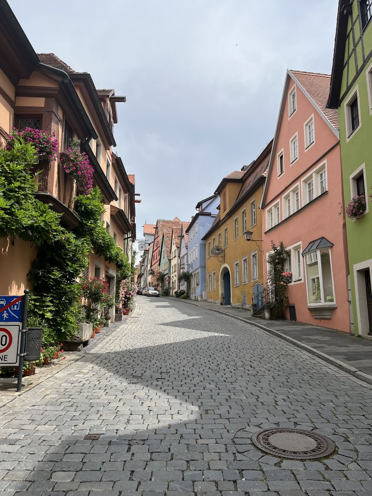
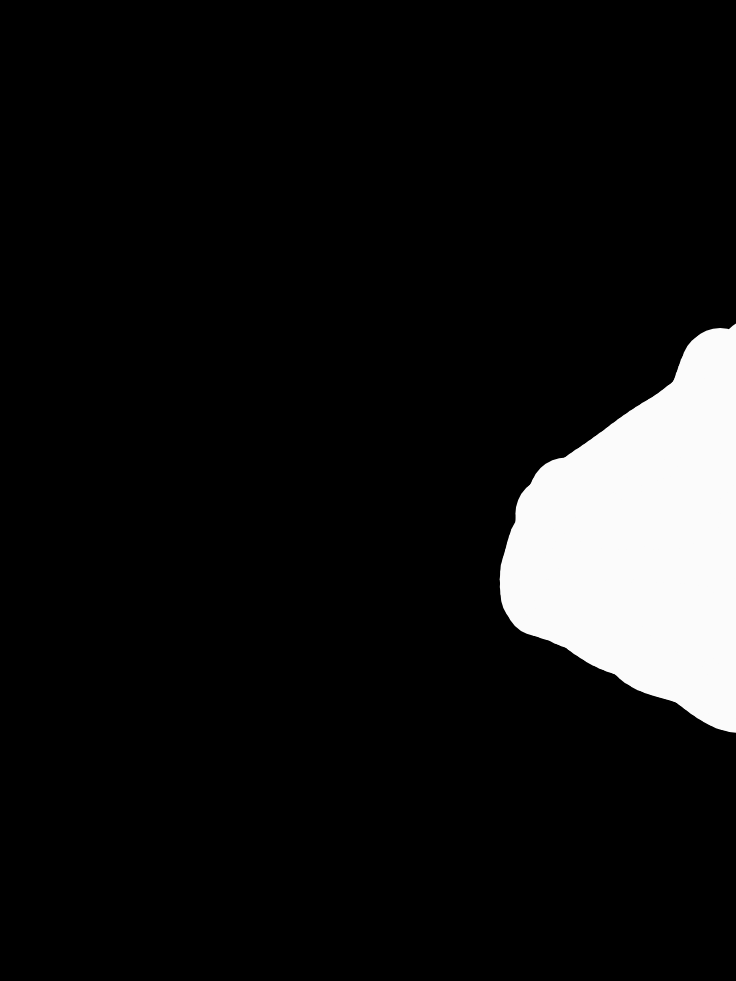
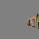
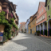
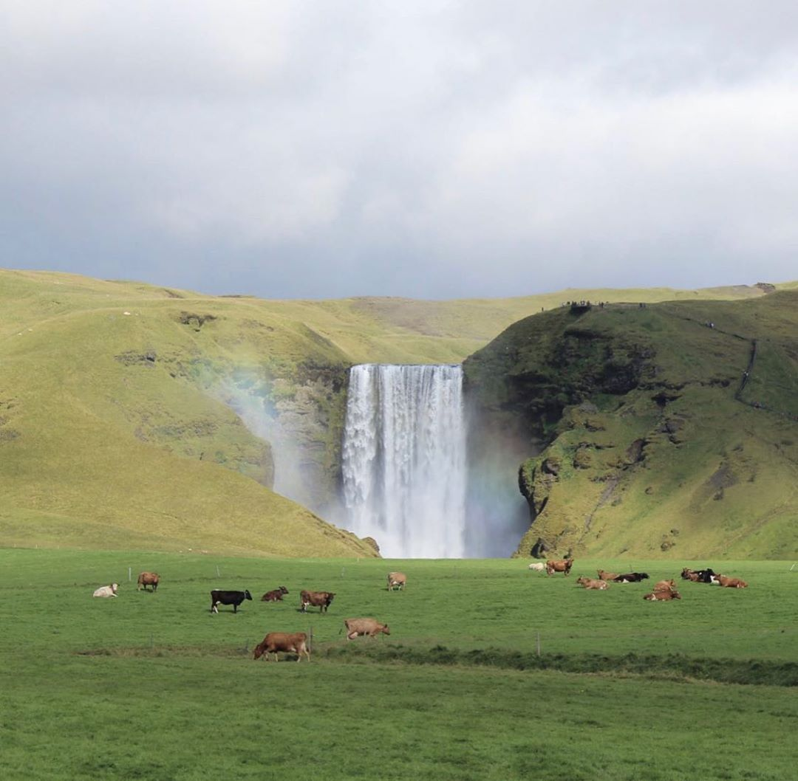
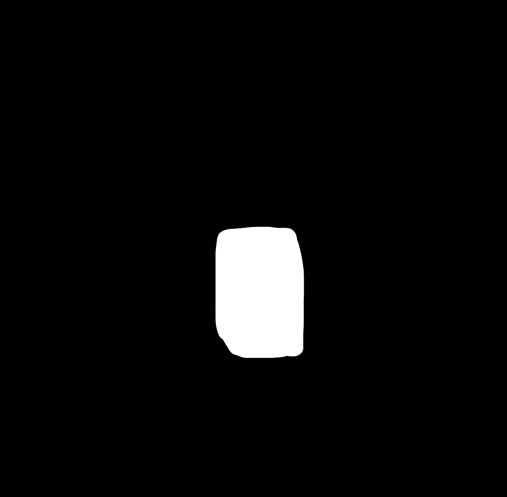
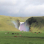
part 1.7.3: text-conditional image-to-image translation
web image:
here is the campanile, edited at different starts with the prompt "a white spaceship"
here is a scene of the waterfall, edited at different starts with the prompt "a luxurious white car"
here is a scene of houses, edited at different starts with the prompt "a big barn door surrounded by flowers"
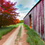
part 1.8: visual anagrams
here is one (upsampled) visual anagram i made by using embeddings from these two prompts: "a painting of a car" and "a painting of a bird"
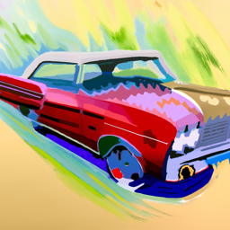
here is another (upsampled) visual anagram i made by using embeddings from these two prompts: "a painting of a mountain range" and "a side profile"
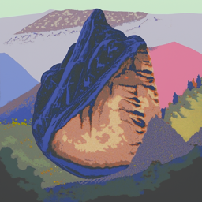
part 1.9: hybrid images
for the hybrid images, i chose to stick with the suggested Gaussian blur with kernel size = 33 and sigma = 2. here are my resultant images:
here are two hybrid images i made by using embeddings from these two prompts: "a painting of a car" and "a painting of a bird"
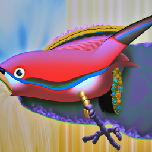
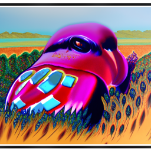
here are two more hybrid images i made by using embeddings from these two prompts: "a lithograph of waterfalls" and "a lithograph of houseplants"
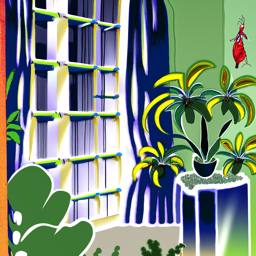
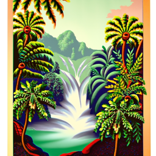
part B
part 1.1-1.2: implementing and using a UNet to train a denoiser
For this part, I implemented a UNet and used it to train a denoiser. Below, I show some results of the noising process over several different noise level values:
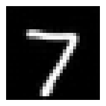
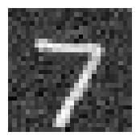
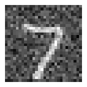
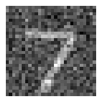
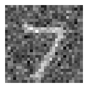
part 1.2.1 training
here is a plot of my training loss curve every few iterations during the whole training process when noise is set to σ = 0.5:
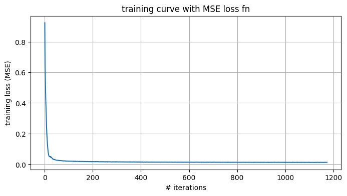
then after training the model, here are some example results after the FIRST epoch:

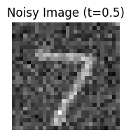
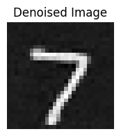
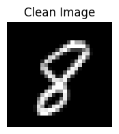
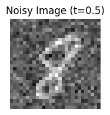
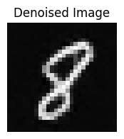
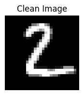
then after training the model, here are some example results after the FIFTH epoch:


1.2.2 OOD testing
here are sample results on the test set with OOD noise levels, and the same image as 1.2. we can see some strange things happening especially as noise levels are higher in the denoising process.
part 1.2.3 denoising pure noise
here is a plot of my training loss curve every few iterations during the whole training process when noise is set to σ = 0.5:
Fromt the generated outputs when denoising ("pure noise"), the image seems to truly get lost. the output can be interpreted as something like a superposition of many numbers,
and it seems the output is imprecise in determining the actual value of the output even after 5 epochs, which makes sense because of all of the noise.
Also here are my sample results on pure noise after the FIRST epoch:


and here are my results for the fifth epoch:
part 2.2 training the time-conditioned unet
here is my training loss curve plot for the time-conditioned UNet:
part 2.3 sampling from the time-conditioned UNet
here are my results for sampling from the time-conditioned UNet for 1, 5, and 10 epochs:
part 2.5 training the class-conditioned unet
here is my training loss curve plot for the class-conditioned UNet:
part 2.6 sampling from the time-conditioned UNet
here are my results for sampling from the class-conditioned UNet for 1, 5, and 10 epochs:
then, i got rid of the learning rate scheduler. i made two changes to compensate for the loss:
the first change was to decrease the learning rate because eventually as epochs continue, our steps would be normally
too big if the learning rate isn't going to decay anymore.
the second step was to clip the gradient's magnitudes, once again to kind of compensate for the lack of "decay" going on. by using
torch.nn.utils.cli-grad_norm, we can try to scale down the gradient if the norm is too big and avoid unstable training/any explosions
.
here are my results after removing the scheduler and adding in these new changes. to me, they look pretty solid, and one main difference between the resutls now and before,
at least visually, are that the numbers are a lot less "thicker" and "fatter", which i interpret as more "confidence" in this new model in what a digit "looks like". here is a side-by-side comparison: